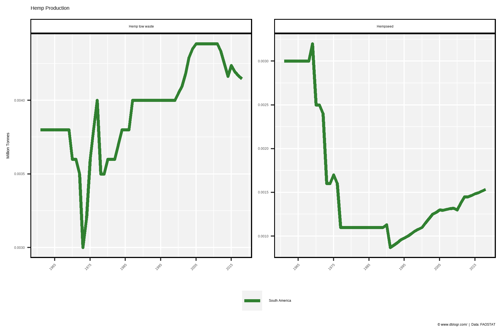
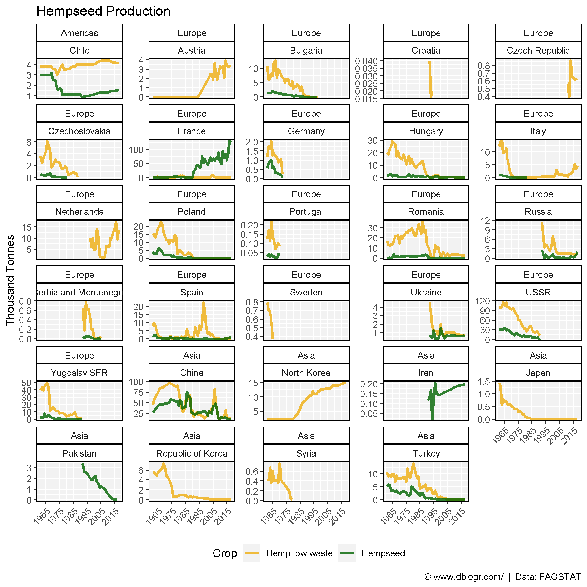
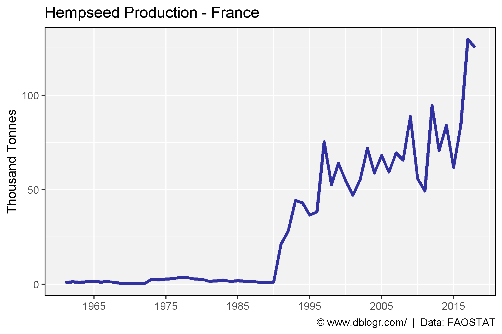

# devtools::install_github("derekmichaelwright/agData")
library(agData) # Loads: tidyverse, ggpubr, ggbeeswarm, ggrepel# Prep Data
colors <- c("darkgreen", "darkgoldenrod2", "darkorange", "darkred",
"darkblue", "darkslategrey", "aquamarine4", "burlywood4",
"antiquewhite4", "darkorchid1" )
areas <- c("South America", "Eastern Asia", "Southern Asia", "Western Asia",
"Eastern Europe", "Western Europe", "Southern Europe", "Northern Europe")
xx <- agData_FAO_Crops %>%
left_join(agData_FAO_Country_Table, by = c("Area"="Country")) %>%
filter(Crop %in% c("Hempseed", "Hemp tow waste"),
Measurement == "Production")
x1 <- xx %>% filter(Area %in% areas) %>%
mutate(Area = factor(Area, levels = areas))
# Plot Data
mp <- ggplot(x1, aes(x = Year, y = Value / 1000000, color = Area)) +
geom_line(size = 1.25, alpha = 0.8) +
facet_wrap(Crop ~ ., nrow = 1, scales = "free_y") +
scale_color_manual(name = NULL, values = colors) +
scale_x_continuous(breaks = seq(1965, 2015, 10)) +
theme_agData() +
theme(legend.position = "bottom",
axis.text.x = element_text(angle = 90, vjust = 0.5)) +
labs(title = "Hemp Production", y = "Million Tonnes", x = NULL,
caption = "\xa9 www.dblogr.com/ | Data: FAOSTAT")
ggsave("hemp_01.png", mp, width = 6, height = 4)
# Prep Data
x1 <- xx %>% filter(Area %in% agData_FAO_Country_Table$Country)
# Plot Data
mp <- ggplot(x1, aes(x = Year, y = Value / 1000, color = Crop)) +
geom_line(size = 1.25, alpha = 0.8) +
facet_wrap(Region + Area ~ ., ncol = 5, scales = "free_y") +
scale_color_manual(values = c("darkgoldenrod2", "darkgreen")) +
scale_x_continuous(breaks = seq(1965, 2015, 10)) +
theme_agData(legend.position = "bottom",
axis.text.x = element_text(angle = 90, hjust = 1, vjust = 0.5)) +
labs(title = "Hempseed Production", y = "Thousand Tonnes", x = NULL,
caption = "\xa9 www.dblogr.com/ | Data: FAOSTAT")
ggsave("hemp_02.png", mp, width = 8, height = 8)
# Prep Data
xx <- agData_FAO_Crops %>%
filter(Area == "France",
Crop == "Hempseed",
Measurement == "Production")
# Plot Data
mp <- ggplot(xx, aes(x = Year, y = Value / 1000, color = Crop)) +
geom_line(size = 1.25, alpha = 0.8, color = "darkblue") +
scale_x_continuous(breaks = seq(1965, 2015, 10)) +
theme_agData(legend.position = "bottom",
axis.text.x = element_text(angle = 90, hjust = 1, vjust = 0.5)) +
labs(title = "Hempseed Production - France", y = "Thousand Tonnes", x = NULL,
caption = "\xa9 www.dblogr.com/ | Data: FAOSTAT")
ggsave("hemp_03.png", mp, width = 6, height = 4)
© Derek Michael Wright www.dblogr.com/